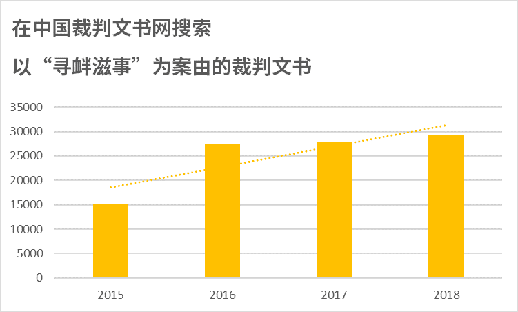

七月底，22岁的安徽漫画家张冬宁因为描绘“猪头人身”讽刺时弊的漫画，被当局以寻衅滋事罪拘捕。 她被指涉嫌在微博散播“谣言”，“侮辱中国人形象，刻意歪曲中国历史，丑化中国人生活习惯”。
寻衅滋事罪是一个“口袋罪”——定义广泛且含糊的罪名，像一个大口袋一样，什么都可以往里装。 不仅维权人士、媒体人，甚至有不少平民百姓、普通网民都因此被囚。 而且近年来这个罪名的使用似乎有上升的趋势。

一宗又一宗被控寻衅滋事的案件让人疑惑，到底这个罪名如何被使用？ 我们集结了近年众多相关的例子，藉此分析寻衅滋事罪的入罪类别，以及它如何成了你我都可能不经意犯上的罪名。
罪名加重、范围扩阔
寻衅滋事罪是按中国刑法第293条订定的罪名，具体的犯罪行为包括：
（一）随意殴打他人，情节恶劣的；
（二）追逐、拦截、辱骂他人，情节恶劣的；
（三）强拿硬要或者任意损毁、占用公私财物，情节严重的；
（四）在公共场所起哄闹事，造成公共场所秩序严重混乱的。
其最高刑罚可至10年。
此罪名过往只适用于破坏公共场所秩序的行为，但随着中国国家主席习近平着力推动“依法治国”，政府于2013年宣布把适用范围扩阔至网络世界。 自此，寻衅滋事罪便成了一条更易触犯的罪名。
北京维权人士王荔蕻指：“所谓‘寻衅滋事’是个‘口袋罪’，所有当局不喜欢的人和事都会以‘寻衅滋事’为罪名加以处罚。 包括对一些上访者，只要对当局有不满言行，就会以此罪名关押、判刑。 并以此威吓敢于发出不同声音的人。 ”
1. 上访或组织维权工作
十年前，市面上的三聚氰胺毒奶粉，令中国大陆许多幼童患上肾结石，受害家庭之一的赵连海，组织了“结石宝宝之家”以进行维权工作，最终却被控寻衅滋事而遭监禁2年半。 十年过去，相似的故事仍在发生：今年五月，疫苗致残孩子的家长何方美，在北京为其孩子和其他疫苗受害儿童募捐和讨回公道时，被强制遣返、拘押，最终被以“寻衅滋事”的罪名逮捕。
这十年里，许多站出来发声的人民被这“口袋罪”收入其中。 尤其在这个罪名适用范围延至网上以后，有不少报导人权事件的公民亦被寻衅滋事的罪名还押及囚禁。 2017年，维权网络平台“非新闻”创办人卢昱宇，因被控寻衅滋事罪而被判入狱4年。 他及其女友自2013年在网上记录了逾7万宗民间抗议、罢工等事件，在2016年更获无国界记者颁授年度“新闻自由奖”的公民记者奖。
今年初，专门报导劳工维权事件的网站“新生代”主编杨郑君、编辑危志立和柯成兵都被警察带走 ，因涉嫌“寻衅滋事”被拘押至今。
2. 声援被捕人士、维权行动或社运
即使没有参与实际维权，只是声援被捕者或维权工作，都同样可能触犯寻衅滋事罪。 维权人士王荔蕻曾于2010年因在网上呼吁网民到福建法院外围观，以声援“福建三网友”案中因言入罪的三名网民，她因此被控寻衅滋事罪，遭判处监禁9个月。
另外，在去年爆发的深圳佳士工人运动中，关注劳工的非政府组织“打工者中心”成员付常国，因在警局外喊口号声援工友的维权行动，遭当局指他“收受境外资金指导工人行动”，以涉嫌寻衅滋事罪拘留及与外界隔绝，他的罪名其后被改为“ 聚众扰乱社会秩序”。
追溯至2015年，当时中国政府开始大规模逮捕维权律师及行动者，连串事件被统称为“709大抓捕”，而王芳为声援709 被捕维权人士吴淦，在朋友聚会中穿上印有“维权抗暴，公益良善”的T恤，结果也被指涉嫌寻衅滋事，并被囚三年后于2018年6月获释。
就声援社会运动而言，中国诗人王藏单是在网上表达支持香港不同的社运，便已两次遭当局以寻衅滋事罪逮捕。 他曾于2014年在网上发图声援香港雨伞运动，结果被当局以寻衅滋事罪拘留9个月，到了今年7月中，他因为转载有关近日香港“反送中”（反对修订《逃犯条例》）运动的演讲，再次被挂上相同的罪名。
除了王藏，中国大陆亦有多名人士因在网上表态支持香港的雨伞运动，纷纷被扣上涉嫌寻衅滋事的帽子，包括被判入狱4年半的维权人士王默。
3. 作出批评或讽刺
别以为只有关注维权工作的人才可能犯上寻衅滋事罪。 3年前，深圳有网民因订制印有中国流亡富商郭文贵口头禅——“一切都是刚刚开始” 的T恤，被控寻衅滋事罪，判监一年半。 当局后来称这行为是“联合海外势力进行反共的恐怖活动”。
在2017年中国十九大期间，广州网民张广红因在网上批评中国国家主席习近平“穷兵黩武”，以及过去多次批评政府，最初被控侮辱罪，当局后来改以寻衅滋事罪判处监禁1年半。
此外，广州的作曲家徐琳亦因创作表达追求民主的歌曲，以及曾支持709律师及多次批评政府，去年被控寻衅滋事判刑3年。 法院的判决书指他在网络上发布有关国家大事的“虚假信息”，造成公共秩序严重混乱，并多次辱骂国家领导人，对社会造成“恶劣”影响。
寻衅滋事罪这个“口袋罪”在近年来越来越广阔，能装下的行为也越来越多，从发起参与维权行动，到在网络上发布讽漫画，都能被装入其中。 这反映了中国政府企图以“依法治国”的包装来进行全面管治，使社会出现寒蝉效应，令更多人自我噤声，敢怒不敢言。
但尽管如此，每当有不公义之事出现时，在中国仍然不缺乏关注与行动。 人民在现实生活和网络世界中，仍然在不懈追求自由地表达意见、创作及行动的权利。 中国政府应停止滥用寻衅滋事罪这一类的“口袋罪”，尊重法律所赋予的公民自由，选择真正的依法治国，而不是用法律去惧吓人民。